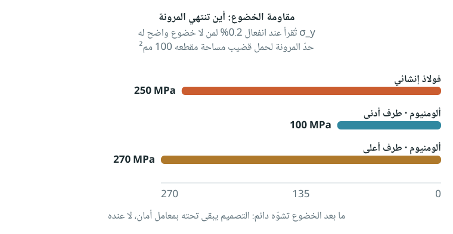

مقاومة الخضوع
Yield strength
مقاومة الخضوع σ_y هي الإجهاد الذي يبدأ عنده المعدن بالتشوّه اللدن، أي التشوّه الذي لا يعود عند رفع الحمل. وتُقاس بوحدة MPa. وهي الحدّ الذي يُصمَّم تحته معظم المنشآت لتبقى في المدى المرن. للفولاذ الإنشائي نحو 250 MPa، وللألومنيوم نحو 100–270 MPa.
عند تحميل معدن يبدأ التشوّه مرناً: يزول التشوّه عند رفع الحمل، وتوصف العلاقة بقانون هوك. وعند إجهاد معيّن يبدأ التشوّه اللدن: تنزلق المستويات البلورية فوق بعضها ولا يعود الشكل عند رفع الحمل. وهذا الإجهاد هو مقاومة الخضوع. ولهذا تُصمَّم الجسور والأوعية تحت هذه القيمة بمعامل أمان. مثال: قضيب فولاذي مقطعها 100 mm² ومقاومة خضوعها 250 MPa يحمل قبل الخضوع 250×10⁶×100×10⁻⁶ = 25000 N = 25 kN.
كيف تعمل الظاهرة؟
المعادن تتكوّن من حبيبات بلورية فيها عيوب تُسمّى الانخلاعات. وعند تطبيق إجهاد تتحرك هذه الانخلاعات عبر الشبكة، فينزلق جزء من البلورة فوق جزء آخر. وقبل الخضوع تكون الحركة محدودة ومرنة، وعند الخضوع تصبح الحركة مستمرة فتبقى deformation دائمة. ولهذا تزيد مقاومة الخضوع بإعاقة حركة الانخلاعات: بالحدود بين الحبيبات، وبالذرات الأجنبية، وبالتشكيل البارد الذي يكدّس الانخلاعات.
العلاقة بالأرقام
σ = F/A، والانفعال ε = ΔL/L₀. وفي المدى المرن σ = E·ε، حيث E معامل يونغ. وعند الخضوع تنحرف العلاقة عن الخطية. مثال: فولاذ E = 200 GPa وσ_y = 250 MPa يعطي انفعال خضوع 250×10⁶/200×10⁹ = 1.25×10⁻³، أي 0.125%. ولهذا تكون التشوّهات المرنة في الفولاذ صغيرة جداً قبل الخضوع.
مفاهيم متقاربة
يُفرَّق بين مقاومة الخضوع ومقاومة الشدّ: الأولى بداية اللدن والثانية أقصى إجهاد. ويُفرَّق بين الخضوع وحدّ التناسب: الأول بداية اللدن والثاني نهاية الخطية، وهما متقاربان لكن غير متطابقين. ويُفرَّق بين الخضوع والزحف: الأول تشوّه عند إجهاد عالٍ قصير الأمد، والثاني تشوّه بطيء عند إجهاد أقل وحرارة عالية. وأخيراً يُفرَّد بين مقاومة الخضوع والصلادة، حيث توجد علاقات تجريبية لكنها ليست هوية.
حدود التطبيق
مقاومة الخضوع لا تصف المواد الهشّة كالزجاج والخرسانة، حيث ينكسر الجسم قبل أن يخضع. ولا تصف المواد عند حرارة عالية حيث يسيطر الزحف. ولا تصف التحميل الدوري حيث يسيطر حدّ التعب. ولا تصف الأجسام ذات الشقوق حيث يسيطر عامل شدّ الإجهاد لا الخضوع. وأخيراً لا تصف المواد المركّبة الليفية، حيث يختلف السلوك بحسب اتجاه الألياف.

| الكمية | القيمة | المصدر |
|---|---|---|
| مقاومة خضوع الفولاذ الإنشائي | 250 MPa | [1] |
| مقاومة خضوع الألومنيوم | 100–270 MPa | [1] |
| أقصى حمل مرن للقضيب | 25000 N | [1] |
المصادر
- 1 Thermal Conductivity of Common Materials - Solids, Liquids and Gases — The Engineering ToolBox (2026). www.engineeringtoolbox.com/thermal-conductivity-d_429.html · اطُّلع عليه 2026-11-22
- 2 CODATA Value: Boltzmann constant — NIST — CODATA 2022 recommended values (2024). physics.nist.gov/cgi-bin/cuu/Value?k · اطُّلع عليه 2026-11-22
استشهد بهذا المصطلح
الصيغتان مبنيتان من بيانات الصفحة نفسها: العنوان والتاريخ ورابط النسخة المنشورة.
مقاومة الخضوع — Yield strength. (2026). ديوان المعرفة — انفراد. https://infiradev.com/diwan/terms/term-yield-strength.html
@misc{term-yield-strength2026,
title = {مقاومة الخضوع},
titleaddon = {Yield strength},
howpublished = {{ديوان المعرفة — انفراد} — مرجع علمي عربي},
year = {2026},
url = {https://infiradev.com/diwan/terms/term-yield-strength.html},
urldate = {2026-11-22},
note = {مراجعة علمية: تحرير انفراد الآلي — نُشر بأمر عبدالله الهويدي}
}
راجعه: تحرير انفراد الآلي — نُشر بأمر عبدالله الهويدي · 2026-11-22 · آخر تحديث 2026-11-22